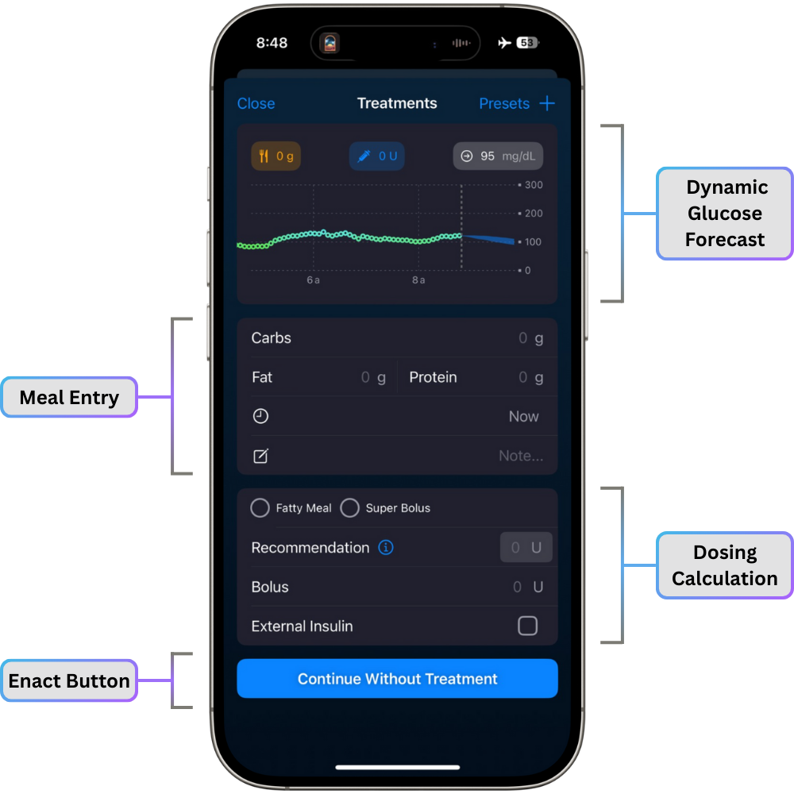
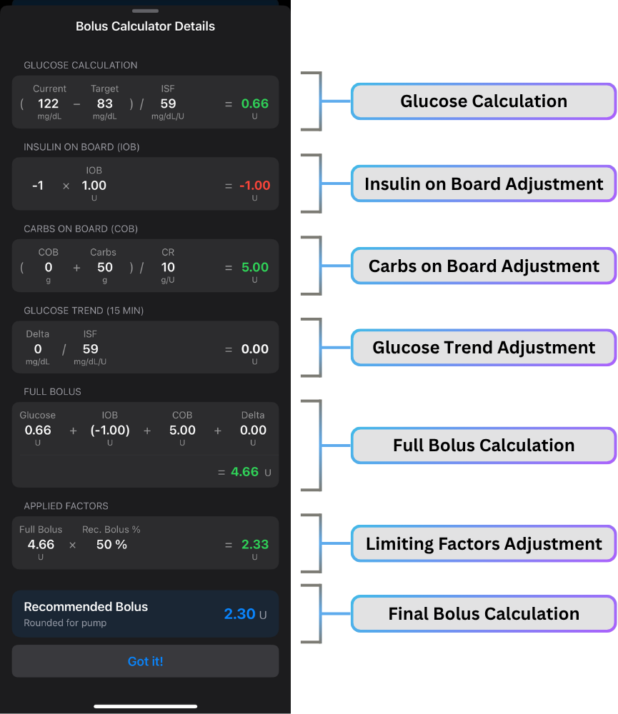

Bolus Calculator
Bolus Calculator Interface
You can access the bolus calculator by tapping the :fontawesome-solid-circle-plus: icon
There are 4 main sections of the Bolus Calculator Interface

Dynamic Glucose Forecast
As you enter your carbs and insulin, this dynamic graph at the top of the bolus calculator will adjust the forecast lines or cone to account for your future data.
Watch the video below to see this in action.
Meal Entry
In the Meal Entry section, you will enter your carbs. If you have FPU's enabled, you can also enter your fat and protein.
Below this, there is a place to enter the time for future or past carbs.
You can also add a note for this meal.
Dosing Calculation
In the Dosing Calculation section, it starts with the Reduced Bolus and Super Bolus options at the top, if you have those enabled.
Below that is the suggested bolus amount that Trio has calculated. Tap the "i" icon for more details and read the section below for more details on the information shared when you tap on this icon.
If you check the "External Insulin" box, the bolus will be added to your IOB, but it will not be delivered by Trio.
This button will show one of the following messages:
- Continue Without Treatment: This means no COB or IOB will be added
- Log Carbs: Carbs will be logged, but no insulin will be delivered
- Log FPU: FPUs will be logged, but no insulin will be delivered
- Log Meal: Both carbs and FPUs will be logged, but no insulin will be delivered
- Log Meal/FPU/Carbs and Enact Bolus: Carbs and/or FPUs will be logged and insulin will be delivered
- Log External Insulin: Insulin will be added to IOB, but it will not be delivered
How Does the Bolus Calculator Determine Dosage?
There are multiple calculations that are used to determine the bolus recommendation in Trio.
A positive calculation will be shown in green and a negative calculation will be shown in red.

Glucose Calculation
The bolus calculator in Trio starts with your basic dosage needed to address your current glucose reading. If your glucose is below your target, it will be a negative number. If your glucose is above your target, it will be a positive number.
Let's walk through Bill's current bolus calculation, starting with the first step, Glucose Calculation.
Glucose Above Target: Bill's current glucose reading is 122 mg/dL. His target glucose is 83 mg/dL. Trio is currently using a calculated ISF of 59 mg/dL/U. How much insulin does Bill need to reach his target glucose?
Here is the formula you will need:
Calculate Bill's Glucose Calculation:
Answer
Bill needs 0.66 units to reach his glucose target without accounting for any other factors.
Glucose Below Target: Bill's current glucose reading is 70 mg/dL. His target glucose is 83 mg/dL. Trio is currently using a calculated ISF of 90 mg/dL/U. How much insulin does Bill need to reach his target glucose?
Here is the formula you will need:
Calculate Bill's Glucose Calculation:
Answer
Because Bill was below target, the bolus calculator estimates he has the equivalent of 0.14 units already present based on his current ISF. Therefore, Trio will subtract 0.14 units from his insulin needed in the bolus calculator.
Trio takes many additional factors into account. Next, it will adjust for the amount of insulin already in his system.
Insulin on Board Adjustment
The next step in the bolus calculation is the adjustment for current insulin on board (IOB). To prevent the calculator from giving you insulin already given, it subtracts your current IOB.
This will also replace any missing insulin that may have occurred after basal reduction or suspension. If you are trending low before a meal, this will add any negative IOB to return you to baseline basal in preparation for addressing your insulin needed for the incoming carbs.
Let's look at how Trio addresses both positive and negative IOB:
Postive IOB: Bill currently has 1.0 units of insulin on board (IOB) from previous SMBs, manual boluses, and/or increased temp basal rates. How will the bolus calculator adjust for this IOB?
Here is the formula you will need:
Calculate Bill's Insulin on Board Adjustment:
Answer
The bolus calculator will subtract 1.0 units from the bolus recommendation.
Negative IOB: Bill currently has -1.0 units of insulin on board (IOB) from previous reduced or suspended basal rates. How will the bolus calculator adjust for this IOB?
Here is the formula you will need:
Calculate Bill's Insulin on Board Adjustment:
Answer
The bolus calculator will add 1.0 units from the bolus recommendation.
There are still more factors for Trio to take into account, so we aren't done yet! Next, let's see how your current COB and the new carbs entered will influence the bolus recommendation.
Carbs on Board Adjustment
The previous step took into account the insulin you already have in your system. This next step will add the insulin needed for both the carbs already on board and the new carbs you just entered, which serves to negate any IOB that was due to previous meals (COB).
Let's look at how Trio addresses times when there are carbs on board and times when there are no carbs on board:
Without COB: Bill currently has no carbs on board (COB), but he is entering 50g into the bolus calculator. His current carb ratio (CR) is 10 g/U. How much insulin does he need to counter both the existing and new carbs in his system?
Here is the formula you will need:
Calculate Bill's Glucose Calculation:
Answer
Based on his current core settings, Bill needs 5.00 units to counter the carbs he's entered.
With COB: Bill currently has 20g carbs on board (COB), but he is entering 50g into the bolus calculator. His current carb ratio (CR) is 10 g/U. How much insulin does he need to counter both the existing and new carbs in his system?
Here is the formula you will need:
Calculate Bill's Glucose Calculation:
Answer
Based on his current core settings, Bill needs 7.00 units to counter the carbs he's entered and his current COB.
We aren't done yet! Aren't you glad Trio is doing all of this for you and you only need to follow along to understand the reasoning behind it? Next, it will look at how our glucose is trending to ensure it's not over or under treating you.
Glucose Trend Adjustment
In Trio 1.0.2, the calculator selects glucose readings newer than 20 minutes ago and subtracts the oldest selected value from the newest. The actual interval depends on available readings; with fewer than two readings, delta is zero. It does not normalize this difference to a fixed 15-minute interval, despite the internal fifteenMinutesInsulin name. If you are experiencing a steep rise or steep fall, this helps Trio counter that activity and prevent an over- or under-dose.
Let's look at how Trio accounts for an increasing trend and a decreasing trend in glucose:
Increasing Trend: Bill's last 3 glucose readings were steadily increasing for a combined change of +29 mg/dL. His current ISF is 59 mg/dL/U How will Trio treat this trend in glucose?
Here is the formula you will need:
Calculate Bill's Glucose Trend Calculation:
Answer
Based on his current ISF, Bill needs 0.49 units to counter the current trend in his glucose readings.
Decreasing Trend: Bill's last 3 glucose readings were steadily decreasing for a combined change of -15 mg/dL. His current ISF is 100 mg/dL/U How will Trio treat this trend in glucose?
Here is the formula you will need:
Calculate Bill's Glucose Trend Calculation:
Answer
Based on his current ISF, Trio will subtract 0.15 units to counter the current trend in his glucose readings.
Next, Trio combines all of the dosage components that it has calculated into one full bolus recommendation.
Full Bolus Calculation
Trio starts your bolus recommendation at the full bolus amount, then adjusts it in the next step. Before it can adjust, it needs to know what the full bolus needed is. To do this, it takes all the previous calculations and combines them.
Let's look at the combination used in the image to see what the full bolus recommendation is:
In the image above, you can find the steps of each calculation. Let's combine them to see what Bill's full bolus calculation will be.
Here is the formula you will need:
Calculate Bill's Full Bolus Calculation:
Answer
Based on all the important factors that make up his bolus calculation, Trio determines Bill needs 4.66 units for this bolus.
Now that Trio has the full bolus determined, Trio reduces this based on the settings you've put in place.
Limiting Factors Adjustment
Trio will reduce your bolus amount by the Recommended Bolus Percentage you've set.
Let's look at how Trio will adjust Bill's bolus based on the default setting of 50%:
Bill has his Recommended Bolus Percentage set to the default of 50%. In the previous step, we calculated he needed 4.66 units. How will Trio adjust his bolus recommendation based on this setting?
Here is the formula you will need:
Calculate Bill's Limiting Factors Adjustment:
Answer
Trio determines Bill needs 2.33 units for this bolus.
But, wait! Trio can't administer 2.33 units because he's using an Omnipod pump. Trio addresses this in the final step.
Final Bolus Calculation
Now that Trio has the final recommended bolus determined, it must ensure it provides the pump with a bolus command that it can execute. Meaning, a bolus amount that the pump can give.
This is pretty simple. Trio will round up or down the bolus calculation. If the calculated amount is greater than 0.06, it will round up. If it is less than 0.05, it will round down. If it is exactly 0.00 or 0.05, it will not change the amount.
Trio has determined Bill needs 2.33 units. Bill is using an Omnipod pump, so boluses can only be delivered in increments of 0.05 units. How will Trio adjust Bill's final bolus recommendation?
Answer
Because Bill's recommended bolus ends in a number less than 0.05, it will be rounded down to 2.30 units.
Congratulations! You've completed the full bolus calculation. We realize this is an extensive and lengthy process, so we encourage you to ensure your core settings are tested and accurate for the Trio algorithm and your algorithm settings are set appropriately so that you do not need to constantly second guess these determinations.
Tip
- While it is always wise to use your best judgement rather than trusting the bolus recommendation blindly, accurate settings will prevent the need for you to manually intervene and override the bolus recommendation.
- If your glucose updates in the middle of your meal entry, Trio will update your calculation in real time.
Backdated carbohydrate entries
For a backdated meal calculation, Trio uses simulated COB and sets new carbs to zero. For an ordinary entry, it adds existing COB and new carbs, capped at Max COB. This avoids counting a backdated entry both as newly entered carbs and as simulated remaining COB.
The calculator already subtracts current IOB, including automated insulin represented in that IOB. A late meal bolus should not be explained as ignoring all previously delivered UAM/SMB insulin. The calculation still depends on the accuracy and freshness of the stored glucose, COB and IOB inputs.
Recommendation safety gates
The recommendation is zero if current glucose is below 54 mg/dL, minimum predicted glucose is below 54 mg/dL, or the last successful loop is more than 15 minutes old. These checks concern the calculated recommendation, not a universal prohibition on every insulin entry or delivery path.
Otherwise the implementation applies a nonnegative clamp, then Max Bolus, then Max IOB − current IOB, and finally pump bolus rounding. There is no second nonnegative clamp after the Max IOB headroom step; negative headroom therefore remains an implementation edge case rather than a guaranteed zero-result condition.
Two different percentage controls
Positive manual-calculator results are multiplied by Recommended Bolus Percentage and, if selected, Reduced Bolus Percentage. The Super Bolus component is added afterward. SMB Delivery Ratio belongs to automated SMB dosing and is a separate control. See calculator configuration and SMB Delivery Ratio.
1.0.2 source references
- F05 — Calculator trend input is newest minus oldest within 20 minutes
- F06 — Calculator safety gates and backdated-carb handling need explicit documentation
- F11 — The meal bolus calculator already subtracts automated insulin represented in IOB